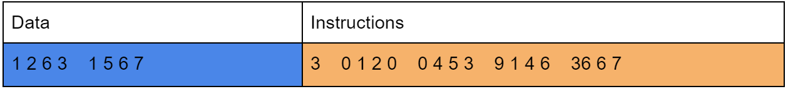
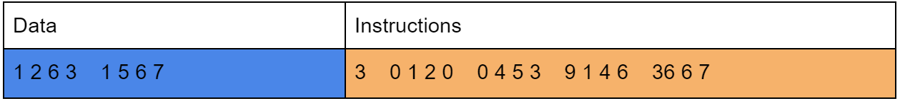

Overview
The purpose of this scripting language is to have two way communication between a script and the Java runtime environment without having to hardcode the scripts in Java. An example would be having externally written scripts working with a Java game engine to do basic commands like moving a character or changing world lighting.
Binary File
This hexadecimal code can be better represented as a list of integers. The first section of integers contain the initial memory data needed to run the instructions. The second section is dedicated to the actual instructions.
 

Instruction Formatting
Constant Format
[constant code] + [memory address] + [data type] + [data value]
Function Format
[function code] + [function name] + [address] + [return address] + ...[parameter memory address]... + [stop code]
Instruction Format
[method code] + ...[parameter memory address]... + [result memory address]
Methods
The word method refers to any method or function written in java. Function refers to the same concept written in AxilScript. Custom methods can be added to the AxilMethodMap by specifying the method name, the number of parameters and the java code performing the methods intended purpose. The java code takes in the args integer array as parameters with the last element in that array being reserved for the memory address location the method returns its value to. The memory object is used to access any data with the memory addresses provided in the args array. The data types of the parameters provided is ignored by the compiler and must be handled here (as seen in the if statements below). The return value of the java code is used as a goto by the Axil runtime to "jump" to the instruction specified. If this functionality is not needed, return -1. Here is an example of the add method.
Operators
New operators can be added through the AxilOperatorMap by specifying the symbol, method name, priority (based on the JavaScript Operator Precedence) and number of parameters. This is an example of the "+" operator being linked to the "add" method.
Compiler
This diagram shows the compiling process. Text files are read and sanitized of all whitespace. Next, the file is split into multiple strings representing lines or statements (functions, if, import and while). Each line is compiled into an integer array presenting instructions and then added on to the rest of the program’s instruction array. The constants and functions of the program are cached by the compiler during this process and saved as a header in the final export file.